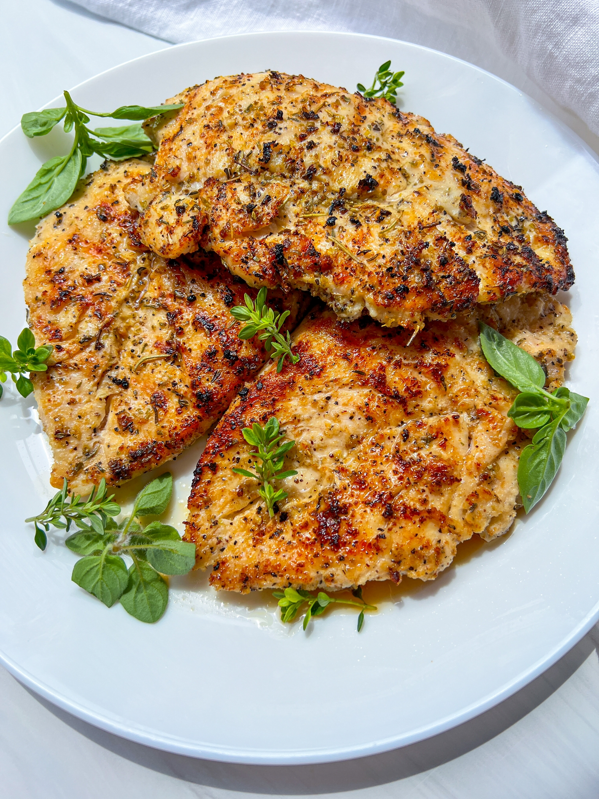

Juicy Chicken Breast

Description
Turn chicken breasts into a golden, garlicky, and juicy meal with this 5-star recipe. Cook up deliciously seasoned and crispy chicken that turns a simple dinner into a sensational meal in a few easy steps. You'll be amazed at how quickly this dish comes together. Learn all about this impressive oven-baked chicken recipe, including how long to cook the chicken breast and how to store leftovers.
Ingredients
- 3 boneless, skinless chicken breasts
- 1 teaspoon salt, to taste
- lemon pepper seasoning, to taste
- avocado oil for cooking
Steps
- If using refrigerated chicken, let it come to room temperature for 30 minutes.
- Place the chicken breast between two pieces of plastic wrap or parchment paper. Using a meat mallet (aka tenderizer), gently pound the meat, making sure you flatten it to an even thickness throughout. Remove the wrap or paper and season the chicken on both sides with salt and seasoning of choice. Add a bit of oil and massage it really well into the chicken.
- Heat up a skillet or grill pan over medium-high heat and add a touch of oil. Place the seasoned chicken in the pan and make sure it sizzles. Reduce the heat to medium and cook the chicken for 3 to 4 minutes on each side, until it reaches an internal temperature of 165F (74C).
- Remove the chicken from the pan and let it rest, loosely covered with foil, for at least 5 minutes. Enjoy.